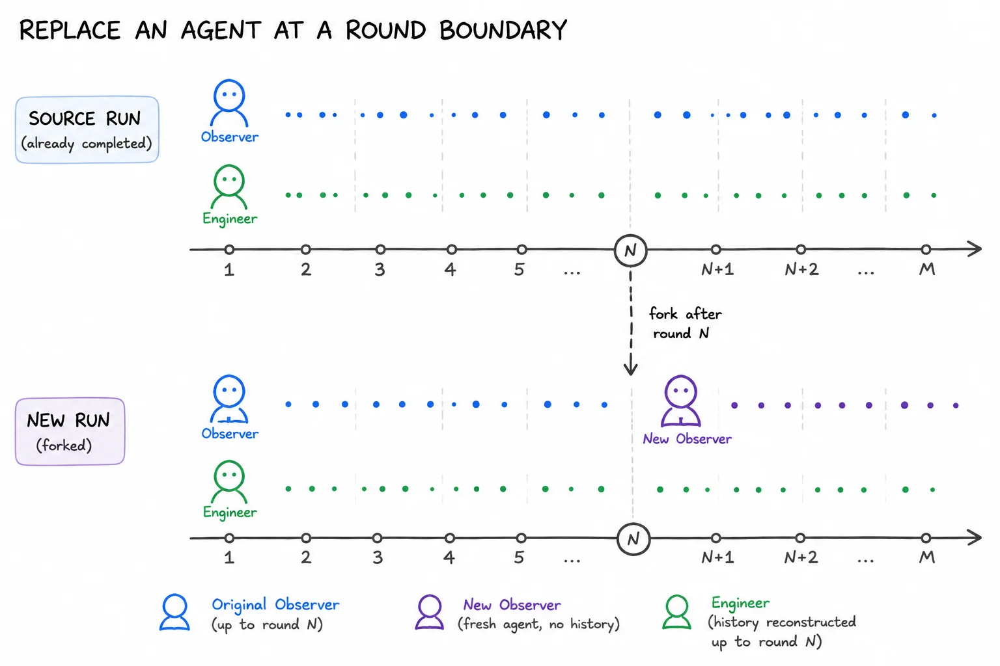
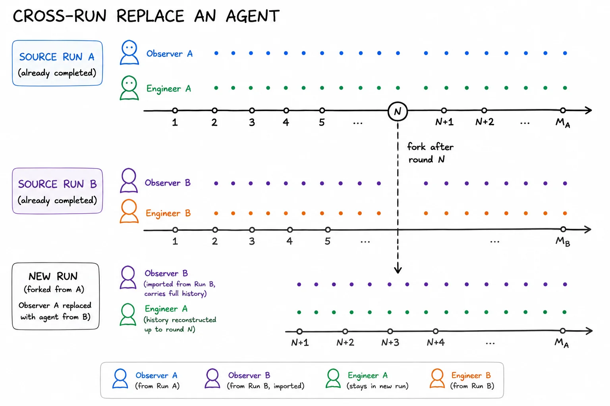
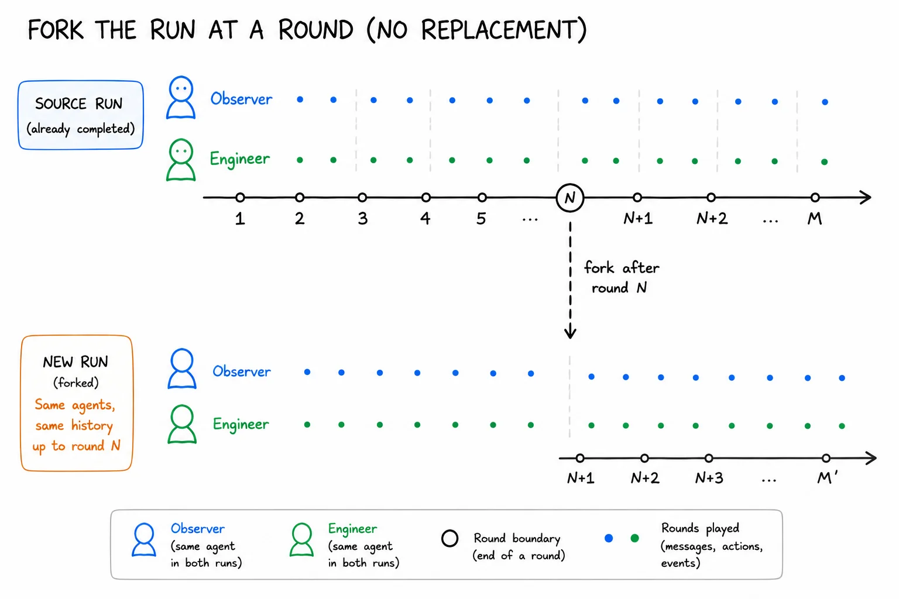
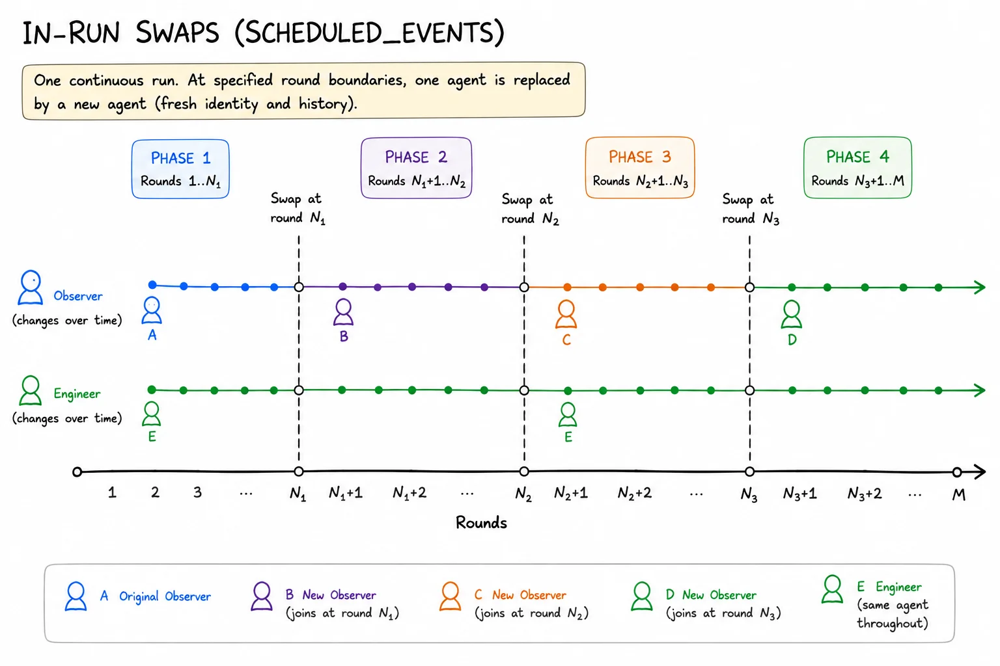

Agent swaps and forks¶
These commands fork a finished run into a new one, replaying its remaining rounds under a controlled change: a different agent in one seat, an agent imported from another run, or the same team under different knobs.
Every fork cuts at the end of a round: --after-round N keeps rounds 1..N
complete, verdict and postmortem included, and the new run plays round N+1
onward.
| Command | What it does |
|---|---|
replace-agent |
Fork after round N with one agent restarted on a fresh history |
cross-run-replace-agent |
Same, but the seat is filled by an agent carrying its full history from a different run |
fork-at-round |
Fork after round N with no agent replaced, under merged knob overrides |
scheduled_events |
Swap agents at round boundaries inside one live run |
All four keep every non-replaced agent on its exact original model and full reconstructed history. To carry on inside an existing run instead of forking it into a new one, see Continuing a run.
Each command prepares the new run directory, prints new_run_id= and
new_run_dir=, and spawns a detached simulation. Watch
<new_run_dir>/<scenario>_stdout.log for progress. From a checkout, spell each command
VIRTUAL_ENV= uv run --no-sync python -m glossogen ....
For the mechanics behind all of this (how a run is cloned, how a history is rebuilt, how the boundary round is ordered), see Architecture: replace-agent, cross-run, fork-at-round, in-run swaps.
Replace an agent at a round boundary¶
Keeps rounds 1..N as the source played them and restarts one agent on a fresh history for round N+1 onward, while everyone else continues from where they were. The question it answers: could a newcomer pick up the protocol the others built?

glossogen replace-agent veyru \
--source-run-dir ./runs/veyru/<timestamp> \
--after-round 4 \
--replaced-agent-id field_observer \
--model claude-sonnet-4-6 --provider anthropic \
--runs-dir ./runs \
[--rounds-after K] \
[--visible-history-channel CHANNEL ...] \
[--history-from-round R] \
[--knobs <preset-name|path>]
--after-roundmust be ≥ 1.--rounds-afterdefaults to the source rounds past the boundary (source_round_count - after_round). The new run'sround_countbecomesafter_round + rounds_after.--model/--providerset the replacement agent only.--knobsnames a preset the scenario ships, or a path to a JSON file of your own, merged onto the source's recordedscenario_configbefore validation. It resolves exactly as--configdoes onrun, and is optional: no overrides is a resumed run's normal state. A whole preset passed here replaces every field it declares, so an override file naming only what changes is usually what you want.
The replaced agent's own event log is preserved on disk. What it sees is
reconstructed without text and thinking parts, and without tool calls on
channels the scenario blocks (veyru's postmortem, for instance).
Passing postmortem_disabled_at_start: true here drops the postmortem channel
for the rest of the resumed run: no postmortem injections, no postmortem phase,
sends rejected.
Import an agent from another run¶
Fills the seat with an agent from a different completed run, carrying its full
history (text, thinking, tool calls) from that run. Same scenario and same
agent_id only. The question it answers: how does an agent that learned one
protocol behave when dropped into a team that learned another?

glossogen cross-run-replace-agent veyru \
--source-a-run-dir ./runs/veyru/<sim_a_timestamp> \
--source-b-run-dir ./runs/veyru/<sim_b_timestamp> \
--replaced-agent-id field_observer \
--after-round 14 \
--runs-dir ./runs \
[--source-b-round-end N] \
[--model M --provider P] \
[--rounds-after K] \
[--visible-history-channel CHANNEL ...] \
[--knobs <preset-name|path>]
Sim A is the timeline that continues. Sim B is where the imported agent comes from.
--source-b-round-enddefaults tomin(after_round, B_max_round), the largest slice of B that is temporally aligned with A's swap point without exceeding what B actually played.--model/--providerdefault to whatever the imported agent ran under in Sim B. Pass both together to override, which is how you test a different model in the same seat.
A cross-run run cannot itself be forked again: its log holds the replaced-away agent's turns before the import boundary, so a fork would seed the seat with the wrong agent.
Set postmortem_disabled_at_start for cross-team runs. This flow does not
set it. Without it the agents have a backchannel that re-aligns their protocols
within a round or two, which washes out the effect you are trying to measure.
Fork at a round (no replacement)¶
Forks after round N with no agent replaced. Every agent keeps its full history,
and the fork differs from the source only through merged knob overrides. Useful
for injecting scheduled_events after the fact, toggling the postmortem
mid-experiment, or replaying the remaining rounds on a different configuration.
--rounds-after sets how far the fork plays, past the source's own end
included. A round_count carried by --knobs (every shipped preset has one)
does the same when the flag is omitted, and must agree with it when both are
given.

glossogen fork-at-round veyru \
--source-run-dir ./runs/veyru/<timestamp> \
--after-round 15 \
--runs-dir ./runs \
[--knobs <preset-name|path>] \
[--rounds-after K]
Every agent is pinned to whichever model it was running at the boundary, so forking a multi-swap source picks up each agent's per-phase model rather than flattening them.
Forking after the final round. A completed run can be forked past its own
end: --after-round <final round> with an explicit --rounds-after plays
rounds the source never did. No default exists there, because the default
replays the source's remaining rounds and a final-round fork has none. The
resumed clock records the advance into the new round as
RoundAdvanced(trigger="fork_after_round").
Inherited scheduled_events. The source's schedule carries over unless
--knobs overrides it. Entries at at_round ≤ after_round never re-fire: the
fork keeps those rounds as the source played them. An entry at
after_round + 1 fires on resume, because the clone is captured before the
source dispatched that boundary.
Knob-schema drift. If the scenario gained a required knob after the source ran,
pass it via --knobs or validation rejects the merged config.
If a fork crashes. --resume on the fork's directory continues it from
where it stopped, like any interrupted run. Only a fork that never played
resumes at its boundary. A crashed cross-run fork is the exception: its
imported history cannot be rebuilt past the boundary, so re-create it.
In-run swaps¶
scheduled_events swaps agents at round boundaries inside a single live run, on
one continuous timeline. Three swaps produce four phases (A → B → C → D).

{
"scheduled_events": [
{ "type": "set_postmortem", "at_round": 16, "enabled": false },
{ "type": "swap_agent", "at_round": 16, "agent_id": "field_observer",
"model": "claude-sonnet-4-6", "provider": "anthropic",
"channel_visibility": { "link": { "kind": "full" } } },
{ "type": "swap_agent", "at_round": 31, "agent_id": "stabilization_engineer",
"model": "claude-sonnet-4-6", "provider": "anthropic",
"channel_visibility": { "link": { "kind": "from_round", "round_floor": 16 } } }
]
}
Each swap writes an AgentSwappedMidRun event and a
resume_context_<agent_id>_round_<R>.json file holding the seed history the
swapped-in agent received.
Channel history visibility¶
All the swap flows choose, per channel, how much of the predecessor's history the
new agent can see. In scheduled_events this is the channel_visibility map, a
per-channel discriminated union:
{"kind": "full"}— the whole prior history. The default for any channel not listed{"kind": "none"}— the channel is hidden entirely: no reads, no sends, nothing retained{"kind": "from_round", "round_floor": R}— windowed to roundRonward
With flags, on the replace flows¶
On the two flows that replace an agent the same choice is made with flags.
--visible-history-channel (repeatable) names the channels that keep their
history. Every other channel the agent belongs to has its join index bumped, so
read_channel there returns only post-resume messages. Omit the flag and the
source's replace_agent_default_channel_visibility knob decides, defaulting to
visible for any channel it does not list.
On replace-agent, --history-from-round R then windows the visible set to round
R onward. For the previous P rounds before the boundary, pass
after_round - P + 1. cross-run-replace-agent has no such flag, because the
imported agent brings its own history rather than inheriting a predecessor's, and
fork-at-round replaces no agent, so neither flag applies.
A channel the scenario has globally disabled is forced to none regardless of
what the config asks for.
Scoring a swap¶
round_success_after_resume re-scores the post-swap window and states the
difference against a baseline: the source run over the same rounds for the CLI
flows, the previous phase for an in-run swap. It emits one measurement per swap,
named round_success_after_resume_round_<R>_<agent_id> for in-run swaps.
glossogen evaluate veyru \
--run-dir ./runs/veyru/<new_timestamp> \
--metrics round_success,round_success_after_resume,protocol_learned_after_swap \
--model claude-haiku-4-5-20251001 --provider anthropic
protocol_learned_after_swap asks the complementary question: is there observable
evidence the newcomer picked up the protocol? See Evaluation.
Verifying the reconstructed history¶
Every resumed run writes resume_context_<agent_id>.json, the exact pydantic-ai
messages handed to that agent on its first turn. Read it before trusting a result.
For a cross-run run in particular, the tail of the imported agent's file should match Sim B's last few messages for that role verbatim. That is what confirms the history came from B and was not contaminated by A.